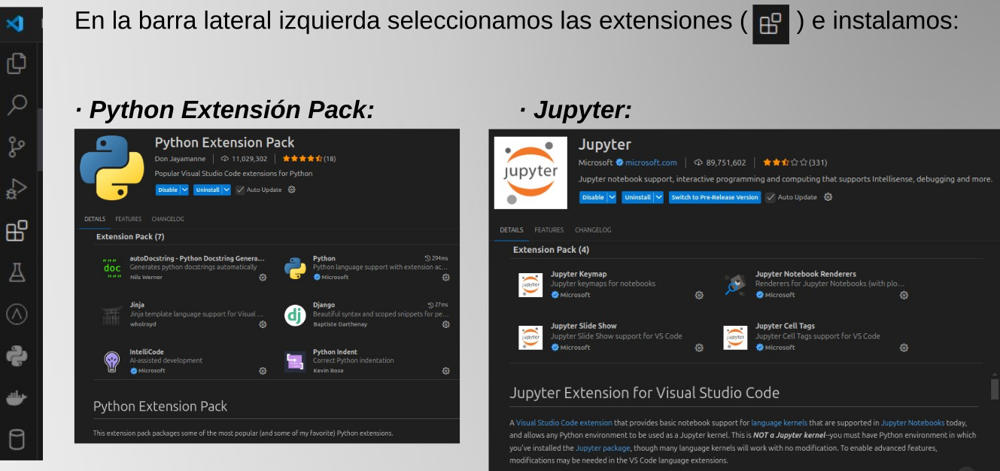
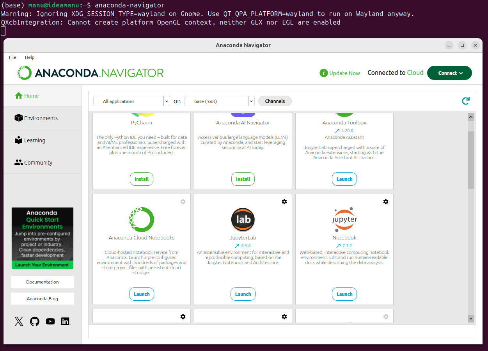
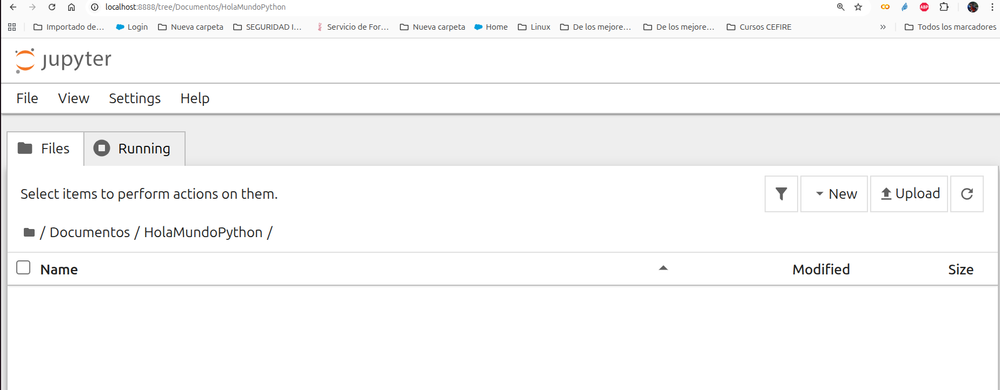
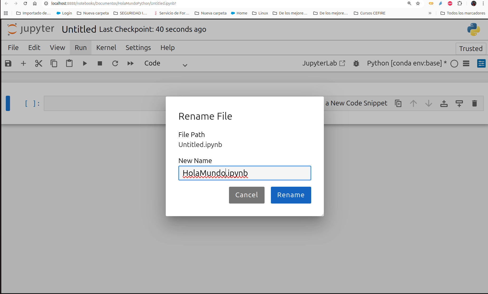
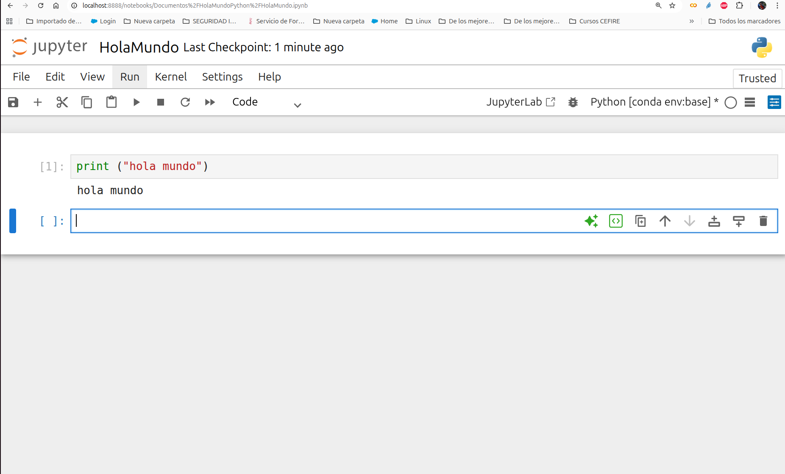

Configuración del entorno de trabajo
Configuración del entorno de trabajo
A continuación explicaremos como instalar el software necesario para realizar este curso:
- Python3
- Visual Studio Code: El IDE
- Visual Studio Code: Extensiones
- Anaconda: Anaconda Navigator: Jupyter Notebook
- Instalar paquetes de Python
Instalación de Python
Comprobamos que está bien instalado

Visual Studio Code
Después instalamos el repositorio:
curl https://packages.microsoft.com/keys/microsoft.asc | gpg --dearmor > microsoft.gpg
sudo install -o root -g root -m 644 microsoft.gpg /etc/apt/trusted.gpg.d/
sudo sh -c 'echo "deb [arch=amd64] https://packages.microsoft.com/repos/vscode stable
main" > /etc/apt/sources.list.d/vscode.list
Por último actualizamos el sistema e instalamos el visual code:
Visual Studio Code: Extensiones

Anaconda: Anaconda Navigator: Jupyter Notebook
Para instalar Anaconda, tanto en Ubuntu como en Windows, hace falta registrarse gratuitamente en https://www.anaconda.com/, descargar el instalador y seguir las instrucciones.
Para comprobar si funciona correctamente después de la instalación escribiremos por consola:
En algunos casos hace falta activar anaconda para futuros arranques poniendo la ruta adecuada según donde tengamos la instalación:
Tras realizar la instalación podemos lanzar anaconda-navigator por consola:

Podemos lanzar jupyter. Jupiter Notebook es un entorno de desarrollo muy sencillo que se utiliza a través del navegador, lo cual facilita muchísimo su uso al no hacer falta instalar ningún componente adicional. Nos va a permitir escribir código en Python, pero además también mezclarlo con otros componentes interesantes, como pueden ser “texto no ejecutable” para documentar. También nos permitirá guardar el resultado de la ejecución de ese código en Python para que cuando lo abramos no tengamos que ejecutarlo para ver que hace.
Dentro de Jupyter Notebook podemos navegar por nuestro directorio de carpetas y crear una nueva carpeta. Si queremos crear una nueva carpeta dentro de “Documentos” pulsamos en “New\Folder” y si queremos cambiarle el nombre por defecto podemos seleccionar la carpeta y pulsar en “Rename” para darle el nombre “HolaMundo”. Creemos nuestro primer notebook (“New\Python [conda env:base]”) y cambiemosle el nombre a “HolaMundo” pulsando sobre el título por defecto:



